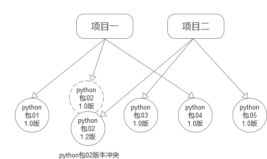

虚拟环境
为什么要使用虚拟环境
在开发过程中，如果要安装python3的包，我们可以用如下命令安装：
sudo pip3 install 包的名词
执行以上命令按装包后，包会默认安装到 /usr/local/lib/python3.5/dist-packages文件夹中去，接下来有一个问题，如果在一台机器上，想开发多个不同的项目，需要用到同一个包的不同版本，如果还使用上面的命令，同名的新版本的包会覆盖旧版本的包，依赖旧版本的包的项目可能就无法运行了，怎么办呢？

解决方法： 虚拟环境
虚拟环境可以为每个项目搭建独立的python运行环境，使得每个项目依赖的python环境互不影响。
安装虚拟环境包
只有安装了虚拟环境包，我们才能创建虚拟环境并且使用虚拟环境，安装虚拟环境包命令如下：
sudo pip install virtualenv
sudo pip install virtualenvwrapper
设置虚拟环境默认生成地址
编辑/home/python/目录下面的.bashrc文件，添加下面两行:
export WORKON_HOME=$HOME/.virtualenvs
source /usr/local/bin/virtualenvwrapper.sh
配置完后，使用source .bashrc使其生效一下。
创建虚拟环境
mkvirtualenv py_django 创建Python2的虚拟环境，名称是py_django
mkvirtualenv -p python3 py3_django 创建Python3的虚拟环境，名称是py3_django
创建成功后，会自动工作在这个虚拟环境上
提示1：创建虚拟环境需要联网
提示2：工作在虚拟环境上，提示符最前面会出现“(虚拟环境名称)”
虚拟环境和一般环境的区别
1、依赖的python环境位置不同，虚拟环境都位于/home/下的隐藏目录.virtualenvs下，可以使用如下命令查看当前python环境位置：
which python
2、依赖的python包和安装python包的位置不同
提示：一个虚拟环境对应一个目录
使用虚拟环境
查看和使用虚拟环境
查看已有的虚拟环境，使用workon命令，按两次tab键
workon 按两次tab
使用虚拟环境，用workon加上虚拟环境名称，按tab键可以补齐
提示：注意提示符的变化
退出虚拟环境
敲入如下命令，就可以退出虚拟环境
deactivate
删除虚拟环境
删除虚拟环境，可以先退出虚拟环境，然后再删除
deactivate 退出虚拟环境
rmvirtualenv py_django 删除虚拟环境
虚拟环境下安装包
在虚拟环境下安装包，应该用"pip install"来安装包，包会自动安装到虚拟环境对应的目录中，注意：这里不能用"sudo pip install"，如果这么安装，包还是会安装到系统默认的目录中。
pip install 包的名词
安装Django包
django是python的一个包，后面要学习使用django，以1.8.2版本为例，这是一个稳定性高、使用广、文档多的版本。
安装django1.8.2的包，命令如下：
pip install django==1.8.2
显示所有的安装包
pip list